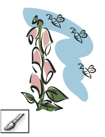
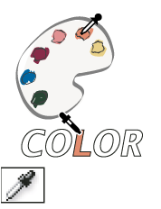
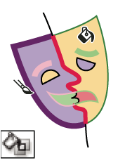
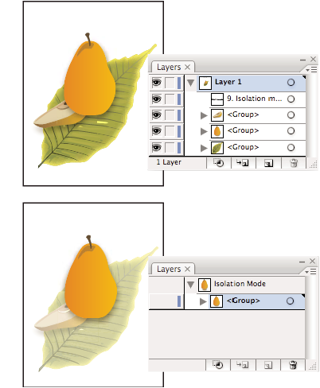
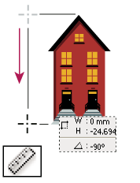

Painting tool gallery
Illustrator provides the following painting tools:
|
 The Paintbrush tool (B) draws freehand and calligraphic
lines, as well as art and patterns on paths. |
The Mesh tool (U) creates and edits meshes and mesh envelopes. |
The Gradient tool (G) adjusts the beginning and ending
points and angle of gradients within objects. |
 The Eyedropper tool (I) samples and applies color, type, and
appearance attributes, including effects, from objects. |
|
 The Live Paint Bucket tool (K) paints faces and edges of Live
Paint groups with the current paint attributes. |
 The Live Paint Selection tool selects faces and edges within
Live Paint groups. |
 The Measure tool measures the distance between two points. |